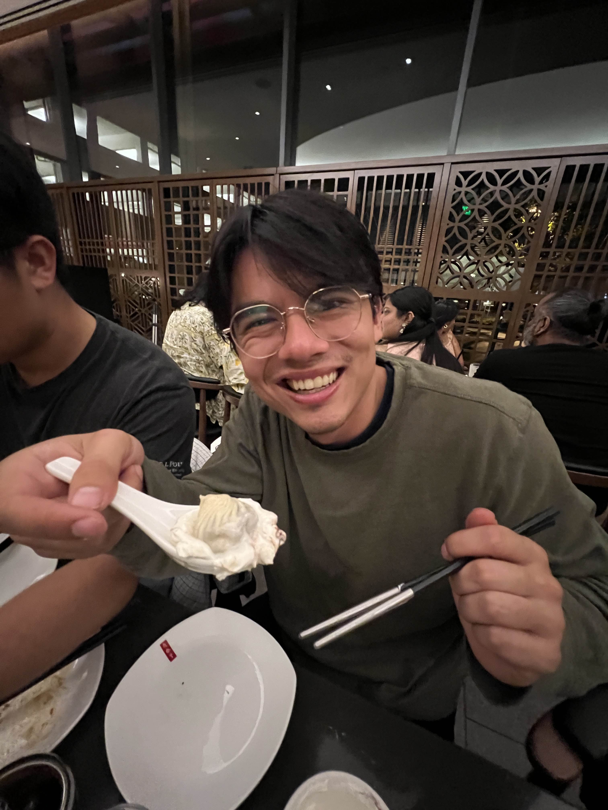
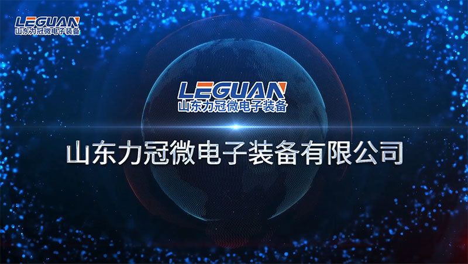

Computer Engineering Student • Cal Poly, San Luis Obispo
Building systems that stretch from bare-metal firmware to branch predictors.
I build across embedded software, controls, digital hardware, and full-stack tools. The common thread is simple: make complicated systems observable, reliable, and fast enough that they stop arguing with the deadline.

Rubber duck reviewer currently on shift.
C / C++
Python
SystemVerilog
Bare-metal Firmware
RISC-V
CUDA
Motor Control
TCP / UDP
OpenCV + ONNX Runtime
sometimes supervised by a duck
About
Build-first engineering with schematics on one screen and compiler logs on the other.
I am Victor Petrov, a Computer Engineering student at California Polytechnic State University in San Luis Obispo. I like projects that cross boundaries: firmware that has to meet timing, tools that make hardware explain itself, and digital systems that only behave once every signal is traced all the way back to reality.
My work spans C and C++, Python, SystemVerilog, networking, controls, simulation, and enough web tooling to give embedded systems a user interface that does not feel like punishment.
The goal is not to collect technologies. It is to make complicated systems understandable, measurable, and durable when they are connected to other complicated systems.
Education
California Polytechnic State University
B.S. in Computer Engineering
Graduation: June 2026
GPA: 3.7 / 4.0
Relevant Coursework
- Data Structures & Algorithms
- Real Time Operating Systems
- Computer Networking
- Computer Security
- Modern Computer Architecture
- Digital Signals & Systems
- Classical Controls
Lab Rules
- Trace the signal before making assumptions.
- Profile first, optimize second.
- If it looks magical, instrument it.
Experience
Internships and teaching roles built around debugging real systems, not hypothetical ones.
Controls Software Engineer Intern
General Atomics • Poway, CA
June 2025 – September 2025
- Maintained and debugged a large-scale C++ flight simulator codebase with real-time networking requirements across multiple interconnected systems.
- Reengineered CMake configuration files, cutting build times by 45% and improving cross-platform compilation reliability.
- Built Python and Bash automation to remove 15+ hours of manual build and deployment work each week.
- Optimized embedded OpenCV and ONNX Runtime implementations through hardware-level profiling, improving inference speed by 300% and reducing frame latency by 65%.
- Led a Windows-to-Linux migration effort for a complex simulator codebase while preserving feature parity.
- Implemented and debugged TCP and UDP communication across 8+ processes, holding sub-10ms latency and 99.9% reliability in a distributed real-time system.
- C++
- Python
- Bash
- CMake
- OpenCV
- ONNX Runtime
- TCP / UDP
ISA Student Assistant
California Polytechnic State University • San Luis Obispo, CA
September 2024 – Present
- Served as a teaching assistant for Digital Design, guiding 30+ students through Verilog, SystemVerilog, and computer architecture fundamentals.
- Ran weekly lab sessions for FPGA-based projects and hands-on debugging.
- Mentored students on ModelSim and Vivado workflows, waveform analysis, and testbench development.
- Verilog
- SystemVerilog
- FPGA Labs
- Mentoring

Embedded Software Intern
LEGUAN MicroElectronics Co. • Shandong, China
June 2024 – September 2024
- Developed AI-enhanced control systems for industrial crystal growth furnaces using GMDH algorithms to optimize real-time PLC operations.
- Built a fault-tolerant communication layer between the AI inference system and industrial PLCs using standard networking protocols.
- Industrial Controls
- PLC
- AI Inference
- Networking
Skills
A technical stack shaped by low-level systems, hardware validation, and practical debugging.
Languages
Programming languages and methodologies
- C / C++
- Python
- RV32 Assembly
- Verilog
- VHDL
- UVM
- Bash
- Perl
Embedded
Firmware, drivers, and real-time systems
- Bare-metal Firmware
- FreeRTOS
- Device Drivers
- Hardware Bring-up
- Embedded Linux
- Motor Control
- PID Control
Digital Design
Architecture, logic, and verification
- RISC-V Microarchitecture
- Caches
- Branch Prediction
- FPGA Validation
- Gate-level Testing
- Testbenches
- Clock-domain Crossing
Protocols
Buses, interfaces, and communication
- PCIe
- SATA
- AXI
- Wishbone
- I2C
- SPI
- UART
- TCP / UDP
Toolchain
Measurement, build, simulation, and ML tooling
- Oscilloscope
- Logic Analyzer
- CMake
- Git
- Docker
- Yosys
- OpenLane
- MATLAB / Simulink
- Gazebo
- CUDA
- PyTorch
- OpenCV
- ONNX Runtime
Project Atlas
Every resume project is now organized into a slightly theatrical archive.
6 builds
Software, AI & Simulation
Telemetry dashboards, robot control software, VTOL sims, transformers, and GPU kernels that needed a direct conversation with PTX.
Open software wing7 builds
Hardware, Robotics & Controls
Motor controllers, robot arms, power systems, instrumentation, and one analog lock with strong opinions about audio frequency.
Open hardware wing5 builds
Chip Design & Digital Systems
Custom processors, memory accelerators, asynchronous FIFOs, and hardware security experiments with placeholders standing guard.
Open silicon wingFeatured Experiments
Selected builds with placeholder visuals, placeholder links, and real engineering underneath.
Placeholder visual
Torque Plot
no sparks in this render
Robotics / Controls
Real-Time Motor Control System
Adapted open-source firmware for custom PCBs, added faster terminal tooling, and validated safety behavior under real fault conditions.
- C / C++
- Embedded Linux
- Telemetry
Placeholder visual
Robot Blueprint
joints behaving for the camera
Embedded / Robotics
Full Stack 4-Axis Robot Arm
Designed RP2040 motor-controller boards, built the IK engine, and wired in a BLE-enabled interface for wireless control.
- PCB Design
- Bare Metal C
- MicroPython
- BLE
Placeholder visual
Data Wall
graphs pretending to be calm
Full Stack / Data
Real-Time Telemetry Platform
Built a React and Flask telemetry stack for live vehicle data, testing workflows, and post-run analysis.
- Python
- Flask
- React
- Docker
Placeholder visual
Pipeline Map
branch predictor acting confident
Digital Design
Custom RISC-V Processor
Designed a RISC-V core with caches, pipelining, branch prediction, FPGA validation, and SystemVerilog testbenches for coverage.
- SystemVerilog
- RISC-V
- FPGA
- Python
Placeholder visual
Battery Vault
cells on their best behavior
Power / Product
GridGuard - Residential Battery UPS
Moved from customer discovery to prototype, with battery validation methods and power management designed around reclaimed lithium cells.
- Power Electronics
- Battery Chemistry
- Product Development
Placeholder visual
Tiny Transformer
token budget still under control
ML / Research
MiniGPT
Implemented a minimal GPT-style transformer from scratch in PyTorch to understand tokenization, attention, and end-to-end sequence generation.
- PyTorch
- Self-Attention
- Google Colab
Contact
If you need someone who can move between firmware, controls, and digital systems, here are the clean signal paths.
Direct links
Placeholder extras
Anything not included in the repo now has a clearly labeled stand-in until the polished version exists.
Project screenshots, videos, and case-study links across the atlas are intentionally placeholders where public assets are not available yet.